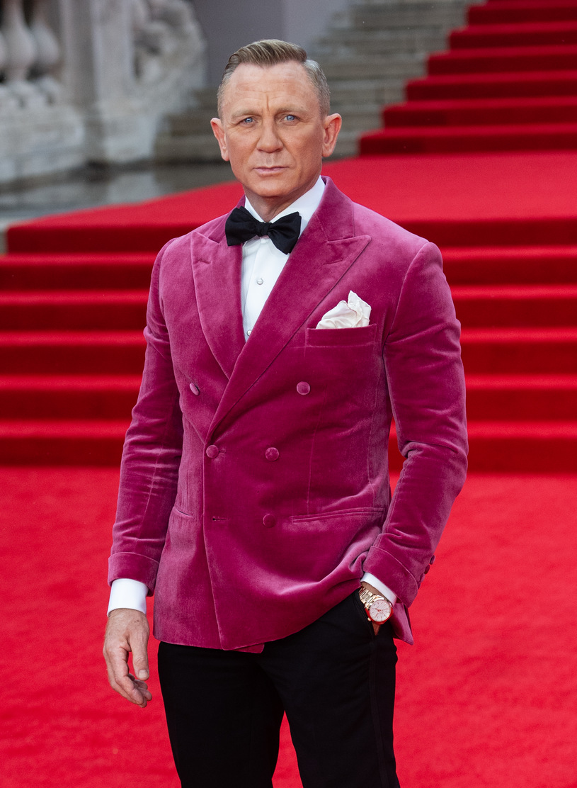

World News !
Hi, Today is 05.10.2021 and i'am your reporter Varvara Baranchykava, nice to meet
you in my blog.
The agenda for today's poem is :
- We're in the nature hands: more earthquakes strike La Palma as lava surges
amid crater callapse.
- how many people were
evacuated
- when was first
eruption
- James Bond actor Daniel Craig honoured with Hollywood Walk with Fame
star.
- how many years he playes this
role?
- his picture in
hollywood
- Cost of living crisis: Energy and council
tax bills could rise by hundreds of pounds from next year, warn experts.
We're in the nature hands: more earthquakes strike La Palma
as lava surges amid crater callapse
It comes after scientists recorded eight new
earthquakes, up to a magnitude of3.5, during the weekend, with officials warningthe volcano wa becoming "much
more aggressive" .Following the first
eruption on 19 September, more than 6,000 people were evacuated from the surrounding
area.
Daniel Craig honoured with Hollywood Walk with
Fame star
Craig has played 007 since
2006 but No Time To Die was his final film as the spy. The movie was released in the UK last week and
earned the highest opening weekend takings of any Bond movie in the UK.A week after his final James Bond movie
was released, Craig became the 2,704th celebrity to have his
name placed on 7007 Hollywood Boulevard in Los Angeles.His star was unveiled in a rare evening ceremony and was
introduced by Bond producers Michael G Wilson and Barbara Broccoli, as well as No Time To Die co-star Rami
Malek.

The 53-year-old' star is just yards away from Sir Roger Moore, who played 007 between 1973 and 1985.Craig, who
has played James Bond since 2006, said it was an "absolute honour to be walked all over in Hollywood".
Selling in the world
| 245,5 |
247 |
366 |
121 |
| 212 |
47 |
38 |
65 |
| 134 |
98 |
64 |
55 |
| 1376131 |
271 |
1973 |
363 |
| 1378 |
1386 |
137 |
3333 |
Zodiac killer who terrorised San Francisco 'identified' by team of 40
cold case investigators
The case of the serial killer, who murdered five people in the late 1960s before taunting the police
through letters to the media, has remained unsolved for more than 52 years.
A team of cold case investigators believe they have identified the
Zodiac killer - who has been at the centre of one of the US' most notorious unsolved criminal cases for more
than half a century.
The Case Breakers, who say they are a team of more than 40 former law enforcement investigators,
journalists and military intelligence officers, have named the serial murderer as Gary Francis Poste.The Air Force
veteran from the Sierra foothills died in 2018, according to the investigators.The Zodiac killer murdered five
people in the Bay Area of California between 1968 and 1969.He taunted police and made threats through letters sent
to area newspapers before abruptly ceasing communication. His letters would contain ciphers which he claimed would
reveal his identity if they were decoded.In one letter, the Zodiac himself claimed to have murdered 37 victims,
and he has been linked to several other cold cases, but only the five Bay Area murders and two attempted murders
have been officially attributed to him.Despite the circumstantial evidence presented by the Case Breakers, federal
and police investigators tasked with solving the 52-year-old mystery told the San Francisco Chronicle that the
latest theory doesn't hold up.The investigators' theory is partly based on Poste's similarity in photos to a 1969
police sketch of the Zodiac killer. One of the key similarities is said to be the scars on his forehead.Jen
Bucholtz, a former Army counterintelligence agent who is a member of the team, also said letters sent by the
Zodiac killer reveal Poste to be the killer when the anagrams in them are deciphered.She told Fox News. "So you've
got to know Gary's full name in order to decipher these anagrams."I just don't think there's any other way anybody
would have figured it out."The Case Breakers also claim to have proof their suspect killed Cheri Jo Bates, a woman
murdered in Riverside, California, in 1966. The murder had been attributed to Zodiac in the past, but Riverside
police have debunked the theory.A number of theories have been put forward as to the identity of the Zodiac killer
over the years - including a son who claimed it was his dead father, and another man who claimed his friend
confessed to the crimes before his death in 2002.
However, the only man ever named as a suspect was Arthur Leigh Allen of Vallejo, California, who died in
1992.In response to the Case Breakers theory which names Gary Poste, the San Francisco office of the FBI said in a
statement to the San Francisco Chronicle on Wednesday: "The Zodiac killer case remains open. We have no new
information to share at the moment.The San Francisco Police Department echoed the statement to the
California-based paper.The San Francisco Chronicle and police get hundreds of tips every year on potential Zodiac
suspects and solutions to the coded messages.
Cost of living crisis: Energy and council tax bills could rise by
hundreds of pounds from next year, warn experts
The forecasts will spark concern for those already struggling
with increased energy prices and the cut in Universal Credit.
Council tax may need to rise by up to 5% a year for the next three years - the latest in a long list of
warnings that the cost of living is expected to increase substantially.
The forecast comes from the Institute for Fiscal Studies (IFS), which said that, under government spending
plans, a rise of at least 3.6% on council tax bills will be needed annually to keep services at pre-pandemic
levels.But extra cost pressures and demand are more likely to see bills rise by up to 5% through to 2024/25.
Consumers should also be braced for further volatile gas prices and the potential collapse of more
suppliers, analysts at research agency Cornwall Insight said, warning energy bills could rise by 30% next year.It
predicts the energy price cap will rise to around £1,660 by next summer - an increase of almost £400
on the record £1,277 price cap set for winter 2021-2022 which began at the start of this month.
Craig Lowrey, senior consultant at Cornwall Insight, said: "With wholesale gas and electricity prices continuing to
reach new records, successive supplier exits during September 2021 and a new level for the default tariff cap... the
GB energy market remains on edge for fresh volatility and further consolidation."
Energy prices surged up by 12% for many households this month as the price cap on default tariffs was adjusted to
reflect higher wholesale prices.
Regulator Ofgem reviews the price cap once every six months, and changes it based on the cost that suppliers have
to pay for their energy, cost of policies and operating costs, among other things.It is designed to ensure consumers
are not ripped off while at the same time being fair to suppliers who need to buy energy on wholesale markets.
Industry experts have warned that another leap is likely to be imposed from April - when the next review is
due to take effect.
Kate Ogden, a research economist at IFS, said: "The coming financial year is likely to be especially
tough, with the likelihood of at least some ongoing COVID-19-related pressures, and a particularly tight overall
spending envelope pencilled in."
The IFS also said the government's social care policies, announced last month, will cost £5bn a year
long-term - almost three times the funding that has been allocated over the next three years.
James Jamieson, Local Government Association chairman, said: "The significant financial pressures facing local
services cannot be met by council tax income alone."Councils are particularly alarmed that the government's
solution for tackling social care's core existing pressures appears to be solely through the use of council tax
and the social care precept."
A government spokesperson said: "The government has allocated more than £12bn directly to councils since
the start of the pandemic - with more than £6bn available to spend as they see fit - recognising that
councils are best placed to deal with local issues."We have also taken historic action to fix the social care
crisis - the health and social care levy will raise £12bn a year to fund the NHS and social care."The
Spending Review will continue to focus on supporting jobs and delivering the public's key priorities."
It comes as:
- The government pressed ahead with its £20-a-week cut to universal credit, despite
concerns expressed by charities that hundreds of thousands of people will be plunged into poverty
- National insurance is due to increase by 1.25 percentage points from April in an effort to fund the
NHS and social care
- Parts of the country - mainly London and the South East - continue to be gripped by a fuel shortage,
due to a lack of HGV drivers. This shortage is also affecting other sectors
- Delays and increasing costs in shipping look set to cause goods shortages and price rises ahead of
Christmas.
|
But extra cost pressures and demand are more likely to see bills rise
by up to 5% through to 2024/25. |
| pic for news |
07.10.2021,Warsaw, Poland |
 .
.